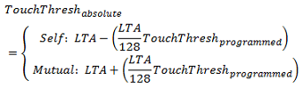

The touch threshold sets the level of interaction required by the user for a touch detection to be declared for an element. Unlike the proximity threshold, the effective touch threshold is dynamic. It is set as a deviation from the long term average (LTA), in units of 1/128 of the LTA. By defining the touch threshold unit as a percentage of the LTA, it is possible to maintain a consistent sensitivity even if the LTA drifts due to a changing environment. The absolute touch threshold for a given sample is calculated at runtime, per the equation below:

For example, if an element has an LTA of 600, and a programmed touch threshold of 10, the effective delta required to enter a touch state is (600 * 10) / 128, or 46. The diagram below illustrates how the touch threshold is reduced as the LTA is reduced, if the threshold is held at a constant of 20.
Self Capacitance Example
When measuring an element in self-capacitance mode, a user's touch on the
element's electrode causes the capacitance of that electrode
to increase. This causes a decrease in the measurement result. When a decrease
in the measurement surpasses the touch threshold, the touch flag is set. Since the threshold is set below the LTA,
the maximum relative touch threshold that may be specified is 127, as 128 would result in the threshold point being calculated
as LTA - (LTA/128)*128, or LTA-LTA, which results in a threshold point of zero.
Mutual Capacitance Example
In mutual-capacitance mode, a user's touch on an element's
electrode causes the mutual capacitance between the Rx and Tx to decrease.
This causes an increase in the measurement result. When an increase in the measurement
surpasses the touch threshold, the touch flag is set.

Implementation Notes
Touch thresholds are specified individually for each element in a sensor.
Each element has an individual touch detect flag that gets set whenever there is a touch detect
for that element. Note that the touch detect flag is also dependent upon the de-bounce process. If
de-bounce is used, the touch status flag will not be set immediately after the threshold crossing.
A global touch flag for a sensor is also provided. A touch detect flag on any element will cause the
sensor's global touch detect flag to be set.
Range of Valid Values for the Touch Threshold Parameter
Self capacitance mode: 1 to 127. Touch thresholds higher than 127 in self mode are not valid, since the effective threshold
is computed as the LTA minus the touch threshold.
Mutual capacitance mode: 1 to 255. Touch thresholds may be larger than 127 in mutual mode, since the effective thresholds
is computed as the LTA plus the touch threshold.
Affected Software Parameters
The Touch_Threshold parameter corresponds to the
ui8TouchThreshold
member of the
tElement
type in the CapTIvate Touch Library.
If a touch detect occurs at runtime, the
bSensorTouch
member of the related
tSensor
instance will be set to true, alerting the application that an element
on that sensor entered a touch state.
In addition, the
bTouch
member of the related
tElement
instance will also be set to true, allowing the application to determine
which specific element(s) entered into a touch state.